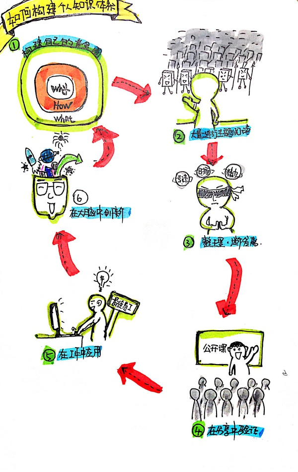
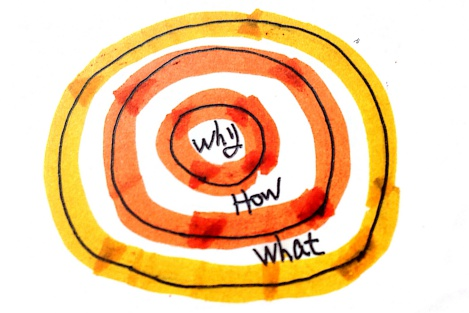
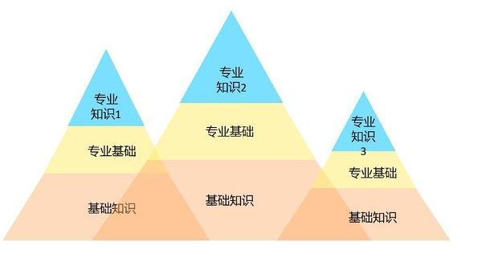
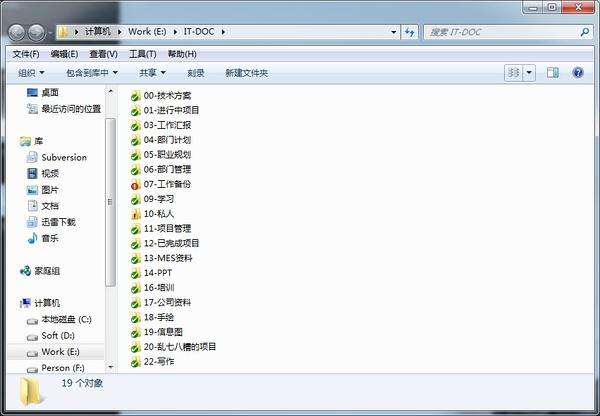
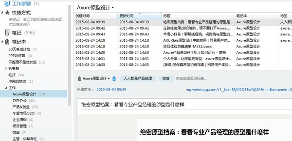
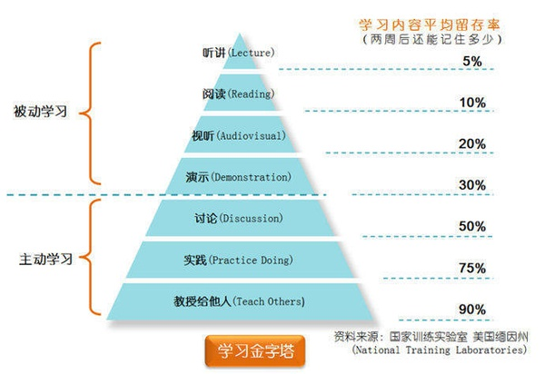
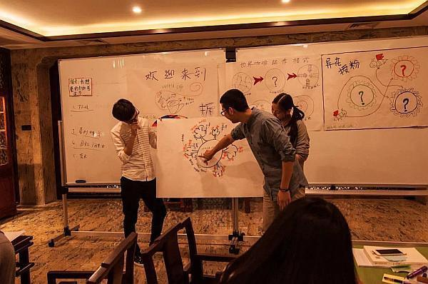
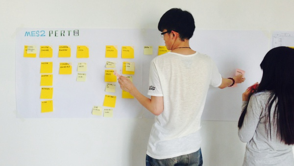
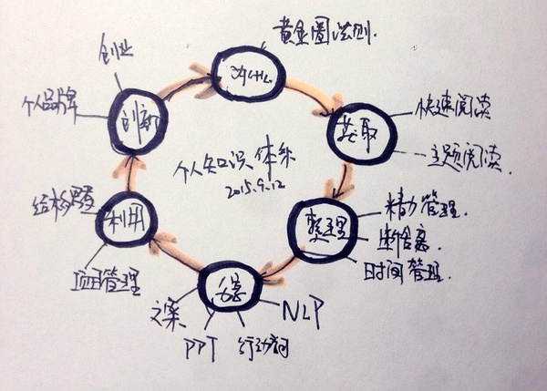

别学东学西了，先建立自己的知识体系吧
我们每天都在接受微信公众号的文章轰炸，我们点赞、转发，甚至保存。然后呢，我们为了什么学习？
我们发现自己有好多东西要学，但是哪些对我们有价值呢？哪些投资回报率不高呢？我们选择的标准是什么？
我们好像懂得了很多东西，但是别人一问，我们却讲不出来……
我们的职场核心竞争力真的有么？我们怎么建立起来？
身处的行业或者公司即使最大，也随时可能倒闭，如果组织靠不住，你是否具备了不依赖的能力？
这篇文章是我对自己这段时期的学习体会做的一个梳理，也试图来解答以上你可能也遇到的问题。
没有时间看文章的，直接看下面这张图，再去看结尾处：

【第一步：从为什么开始】
建立自己的知识体系，就像从一个四海为家的人到给自己建一栋安居的房子，你应该先问问自己为什么要这样做？构建自己的核心价值么？这句话在职业规划中老生常谈了，你有么？
（1）我为什么要去学习？
作为一个“功利”的成人学习者，我觉得知识能带给我价值，那价值体现又在哪里呢？体现在资源、人脉、金钱还有自信。特别是我这样一个从北漂转到三线小城的孩纸，我不学习，我就只能拿三线城市的平均工资……拿到IPO出任CEO赢取白富美走上人生巅峰难道只能在早九晚五在格子间里靠运气么？

（2）我该怎么学习？
在工作中学习：工作中积累处理工作任务，与人沟通，也可以学习同事之间的优秀的做事技巧和方式。我对办公室政治的敏感度为零，这样就可以专注于工作的处理，避免人事间的消耗。推荐阅读《曾国藩的正面和侧面》。
在工作外学习：利用早上和晚上的时间来学习，这个时间段没有过多干扰，大块的时间可以用来专注做一件事。其他零碎的时间可以用做适合零碎看的内容：英语，新闻等。
（3）我要学什么？
通过下图的金字塔，我会发现我自己现在每天正在学习和坚持的是在哪个区间里面：

总之一句话，学那些让自己变得更加专业的知识，让自己的专业知识金字塔变得更高。
【第二步：知识的获取】
搞清楚了目的，也知道了要学什么，怎么学之后，接下来我就要理清楚我能从哪里获取知识。
注意，我说的是知识，不是信息，也不是数据。知识是我可以用来做用的，而信息和数据不一定是。优衣库的视频和郭美美被判刑的信息对我一点用都没有；但是小米的饥饿营销却可以被我利用，成为我的知识。
所以知识的获取过程包含了筛选的过程，那这些信息从哪里来呢？
- 书本：快速阅读和主题阅读的方式能让我快速掌握某一领域的知识，对于畅销类的商业书籍其实也有它的可取之处，你至少知道了当下大家都在谈论什么。
- 微博：我关注的微博的技术类大V们都很少发生活类信息，他们更多的是干货文章的分享。
- 微信公众号：优质的微信公众号里面的文章你会发现很少鸡汤，很干货；
- 网络云课堂：怎么样既能学到东西又不用跑上海北京呢，那就去上网络云课程吧。
【第三步:知识的整理和保存】
知识的淘汰更新非常重要，我们是知识工作者，不是历史学家，很多信息甚至在我们收集到手之后就已经过期了。所以果断抛弃我们当下用不到的知识，用断舍离的方式来提醒我不要囤积“能用”但是当下对我没用的知识垃圾。
对于收集的素材和资料，我会保存在两个地方：
第一个地方是电脑，通过SVN和VPN我让家中的电脑和公司电脑里的文件保持同步更新，避免了来回拷贝的麻烦。

第二个位置是网络笔记，通过印象笔记我把随时随地采集的信息(照片，想法)等通过手机保存，同时这些资料会同步到我的PC端去。

【第四步：知识的分享】
教是最好的学习，实现90%的知识转化，分享是最好的方式。

那有小伙伴会说，哎，我自己都没学好，哪敢提什么分享呀。你一定要等到自己学富五车，饱腹经纶之后你才有勇气做分享吗？我在简书上分享了40几篇读书笔记，每一篇都廖有人问津，点个赞的都没有。这样也是一种分享啊，分享的过程我们强调的是输出，你只要能找到输出的地方，就一定会有人回应你的。
公司内部培训，部门内部分享，网络分享，文章分享，知乎问答，百度知道，能分享的地方太多了。对，这些都是检验你到底懂不懂的真正战场。

【第五步：知识的利用】
任何知识如果对你无用，就是浪费时间。
通过收集，整理和分享之后，你已经将隐性知识转化为显性的知识了，不光你的大脑里有，你还能SHOW出来，工作当中不正需要你这样的伙伴么？
我也经常把学到的工作技能用到工作中，比如有一天早上看《视觉化你的会议》这本书，发现确实如果大家一起用画笔，用贴便签讨论的方式，效果应该会不错。于是下午的会议我们就尝试了一把：

在工作中利用你所学到的东西，既能让验证所学，还能提高工作效率，何乐而不为呢。不要忘咯，我们成人学的最终目的就是为了工作嘛。（为了诗和远方么，滚犊子~！）
【第六步：创新臣妾做不到啊】
创新其实没有我们想象的那么难，但也没有我们想象的那么容易。你看一堆创新类的书籍是没有办法实现创新的，就像你看完外科手术的教学视频，你还是不会动手术一样。
当我们构建出了属于我们自己的知识体系，创新就是在这个知识体系统的各个模块前的跨界组合。I ONLY SEE WHAT I SEE；我们的创新源于我们已知的世界。你的知识体系越健壮、越丰满、越经常更新，创新就会是一件小事。
【第七步：回到原点】
让我们回到最初的第一步，黄金圈法则。
通过前面的六个步骤，我想你可以将自己正在学的，或者想要学的知识进行定位了。就像下图我自己整理自己的：

就像一栋大楼的建设一样，先有骨架，然后才有大厦。
- 为什么阶段: 我着重锻炼的提问能力和逻辑思考能力；
- 获取阶段：我练习快速阅读和主题阅读，学习大V门的读书方法；
- 整理阶段：学习时间管理、精力管理，断舍离，如何做笔记记录；
- 分享阶段：学习如何写出吸引人的文案，如何做好PPT来展示，如何通过行动学习和NLP来让分享过程更加有活力；
- 利用阶段：主要是在项目管理中实践，并学习结构思考能力，在汇报、沟通中提高效率
- 创新阶段：学习如何建立个人品牌，学习想到一个点子之后，如何快速成型，如何去试错；如何这些点子能应用在你的工作中，其实，工作就是一种创业。
通过以上的步骤，我初步建立了自己目前的知识体系，这个体系能保证我在工作的时候改使用什么技能，该提高什么；也保证了我实现“两小时高铁生活圈”的时候，我可以自带系统随时和大城市的人群网络进行链接，随处插拔。而在这些与工作与生活的链接中，我又在不断更新我的U盘系统，保证自己不被淘汰。
【总结】
互联网思维不是工具，它是世界观。这篇文章之后，你可以尝试构建自己的知识体系了。
愿每个人都可以像一个U盘一样，自带系统随处插拔。
愿每个人都可以和别人不一样。